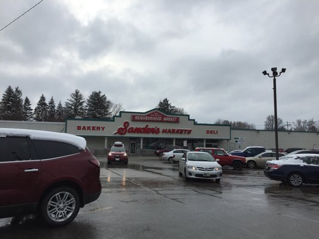
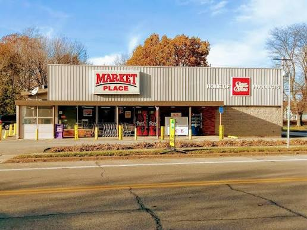
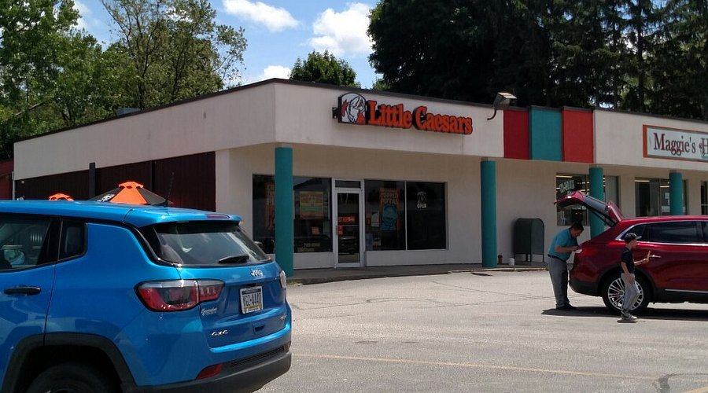

Here are some previous "j words" that I've had. (Don't say "job" around me or I'll cry)
This was my first job and I worked there for like three years. It kinda sucked but it wasn't horrible.

I still work here. I love this job it's so easy.

DON'T ASK ABOUT LITTLE CAESAR'S.

I liked working here. They gave me full-time hours and occassionally there were cats and I pet some of them